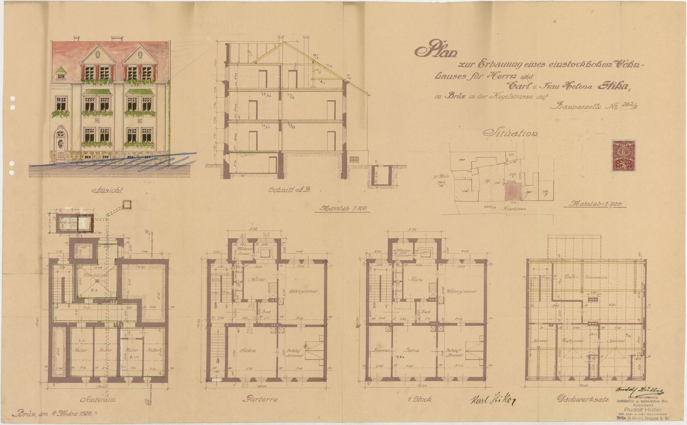
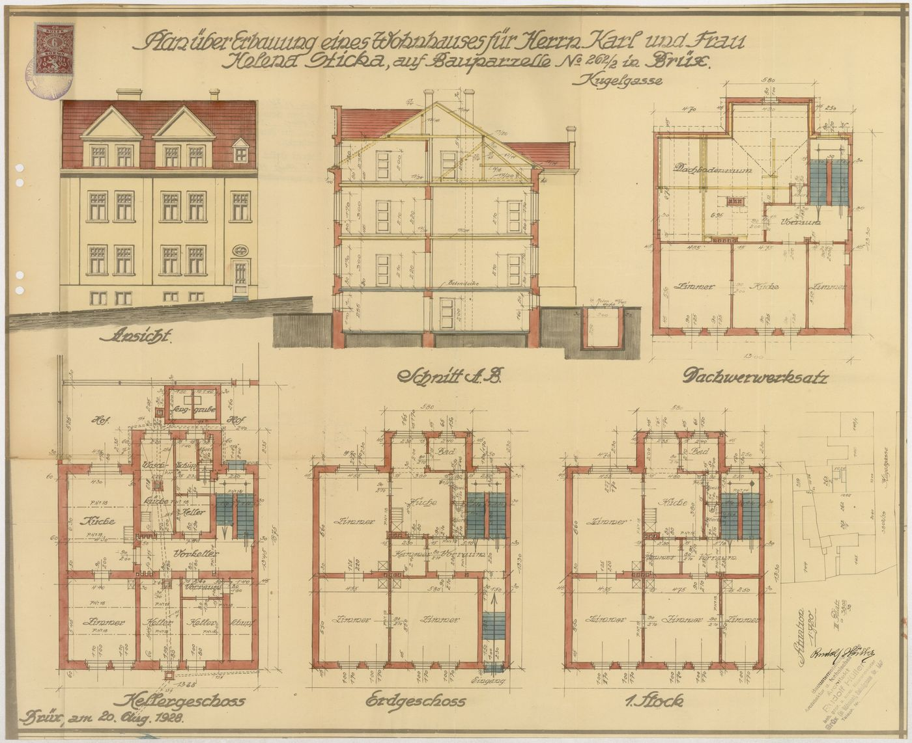
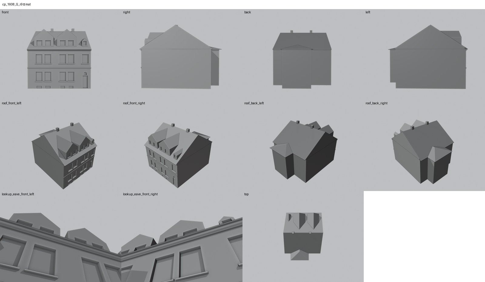

Identita domu
Stav rekonstrukce: Rekonstrukce podle stavebního projektu z 20. 8. 1928 (parcela 262/2). Provedení domu ani jeho podoba v 60. letech nejsou ověřeny fotografií – jde o projektovou hypotézu.
Rekonstrukce podle stavebního projektu „Plan über Erbauung eines Wohnhauses für Herrn Karl und Frau Helena Sticka, auf Bauparzelle No 262/2, Kugelgasse“ z 20. 8. 1928 (starší varianta 4. 3. 1928). Dům stál podle Lageplanu z října 1940, ale jeho provedení ani podoba v 60. letech nejsou ověřeny fotografií – na snímku od schodů je jen nečitelně za 258. Model je proto výslovně projektová hypotéza (rozhodnutí uživatele 20. 10. 2026).
Použité prameny: projekty cp_1608_001 (4. 3. 1928) a cp_1608_002 (20. 8. 1928: pohled, vikýře 2 + 2 + 1, sklepní okénka), Lageplan 1940 na listu cp_263_003.
Přílohy v databázi (4)
Všechny přílohy struktury 1608 v databázi Libuše, načtené 18. 10. 2026 a otevřené. Kliknutím otevřete větší náhled.


plán / výkres
SHA-256 4cb268972cb1…


plán / výkres
SHA-256 3ddf18dd6b40…

archivní karta
SHA-256 99035b68c24f…

odvozenina (kolorovaná / FRONT)
SHA-256 f4cc505a9f70…
Geometrie
| Revize geometrie | r9 |
|---|---|
| Poloha | GIS půdorys id 2052 (ulice Kulová) |
| Šířka průčelí | 12,14 m |
| Výška okapu | 7,60 m (odhad) |
| Podlaží | 2 |
| Střecha podle pramenů | podle projektu: hřeben souběžně s ulicí, štítové konce, dva štítové vikýře po dvou oknech a malý vikýř, dva komíny; zadní křídlo s valbou |
| Otvory / vikýře | 20 / 3 |
| Polygonů | 361 |
| Kontrola podkroví (20. 10. 2026) | prošla: vlasové zásahy do podkroví 0 ze 103 680 paprsků ze 120 pohledů; nekryté zdivo 0,00 m², střecha nad prázdnem 0,00 m² |
Kontrolní pohledy

Textury
zatím bez textur
Až Codex dodá texturovaný model, objeví se v prohlížeči nahoře volba Textury (Codex).
Hypotézy
Stav rekonstrukce: Rekonstrukce podle stavebního projektu z 20. 8. 1928 (parcela 262/2). Provedení domu ani jeho podoba v 60. letech nejsou ověřeny fotografií – jde o projektovou hypotézu.
Vše níže je model_hypothesis, provisional, locked: false.
- výšky z plánu odhadem
- 20.10.2026: realizace podle projektu 20. 8. 1928 není ověřena fotografií (výslovně projekt)
- šířka 12,14 m z GIS proti 13,00 m fronty parcely v situaci 1928
- 20.10.2026 pass 2: 4 sklepní okénka v soklu pohledu 1928 nemodelována (projekt; realizace neověřena)
- 20.10.2026 d: sklepní okénka podle projektu; výška nad terénem zjednodušena na vodorovnou ulici (v projektu terén klesá doleva ~0,5 m)
Soubory
- Geometrie čp. 1608, GLB
- Pracovní model: F:\MOST\output\kulova_geo_fix2_claude_2026-10-20\houses\cp1608\r9\cp_1608_G_r9.blend
- Plán modelu: F:\MOST\output\kulova_geo_fix2_claude_2026-10-20\houses\cp1608\geometry_plan.json